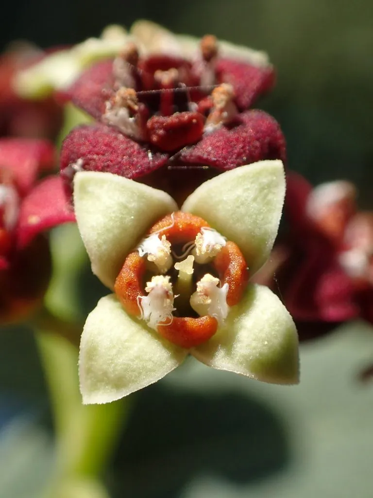

乔木 · 植物界
檀香 Santalum album

檀香科半寄生常绿小乔木，心材富含檀香油、香气持久，是名贵的香料与雕刻用材，原产印度南部热带高原。
- 分类
- 门被子植物门纲木兰纲目檀香目科檀香科属檀香属
- 栖息环境
- 海拔 1000 米以下的热带干湿季分明地区，喜光耐旱，需寄主植物
- 地理分布
- 原产印度南部与印度尼西亚东部；中国广东、台湾、云南等地引种
- 保护级别
- IUCN 易危（VU）；中国未列入国家重点保护野生植物名录
物种志
檀香为檀香科檀香属半寄生常绿小乔木，高 8–12 米，树皮灰褐色、纵裂，小枝细长。叶片对生，革质，卵状披针形，表面淡绿、背面苍白。花小，初开时淡黄绿色，后转紫褐色，组成顶生或腋生的聚伞花序，花期 5–6 月，部分植株可全年零星开花；果实为核果，球形，成熟时紫黑色，内含 1 粒种子，果期 8–9 月。
檀香原产印度南部迈索尔高原及印度尼西亚东部，中国广东、台湾、云南等地有引种。它的根系能与多种植物形成半寄生关系，通过吸器从寄主根部吸收水分与养分，栽培时需配置寄主植物。檀香的心材含檀香油，主要成分为檀香醇，香气持久，是制作香水、香皂、线香与雕刻工艺品的名贵原料，也是中药“檀香”的来源。心材需生长数十年才形成，野生资源因过度采伐而减少，IUCN 将其列为易危物种。
形态与习性
- 株高8–12 m，半寄生小乔木
- 花期5–6 月，花由淡黄转紫褐色
- 果期8–9 月，核果成熟时紫黑色
- 光照喜光，幼苗期需适度遮阴
- 水分耐旱，依赖寄主根系供水
- 土壤排水良好的沙质壤土
- 主要用途提取檀香油、制线香与雕刻，中药入药
趣味知识
- 檀香是半寄生植物，幼苗必须依附寄主植物的根系才能正常生长。
- 檀香心材需生长数十年才积累足够的檀香油，因此格外珍贵。
- 印度迈索尔出产的“老山檀”香气醇厚，被视为檀香中的上品。
- 檀香木按重量计价，优质心材的价格可与白银相比。